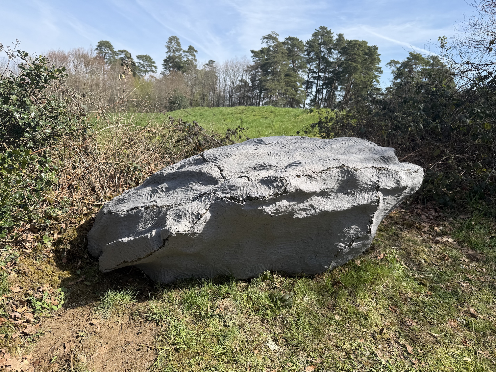
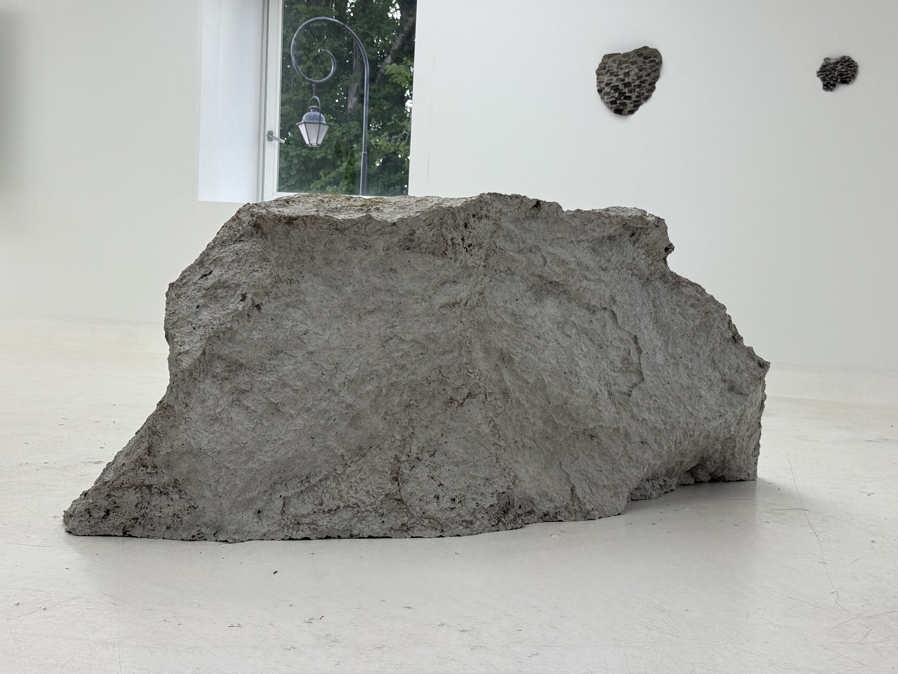
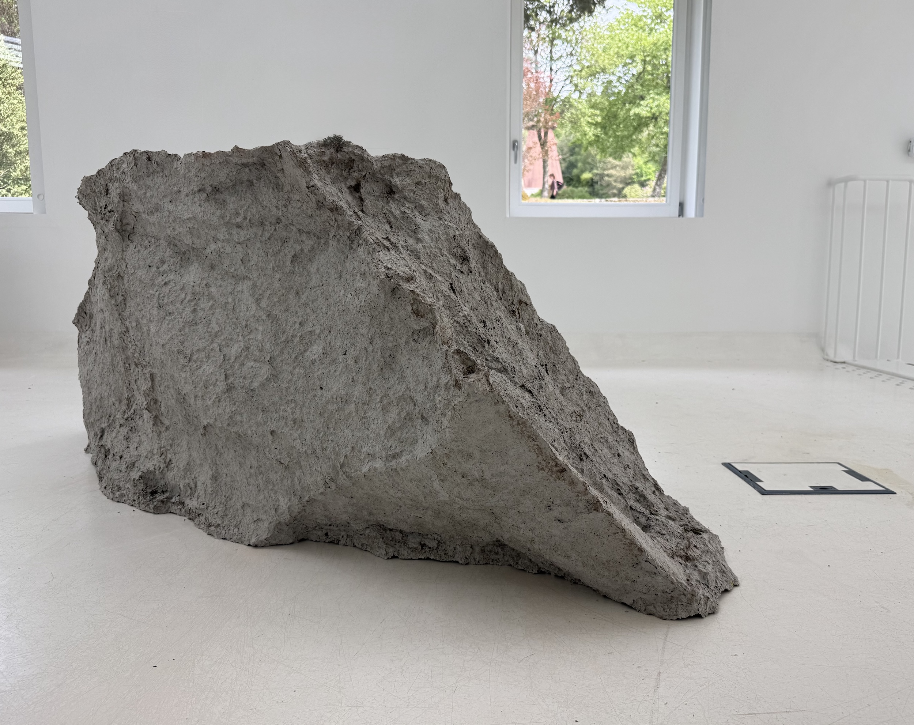
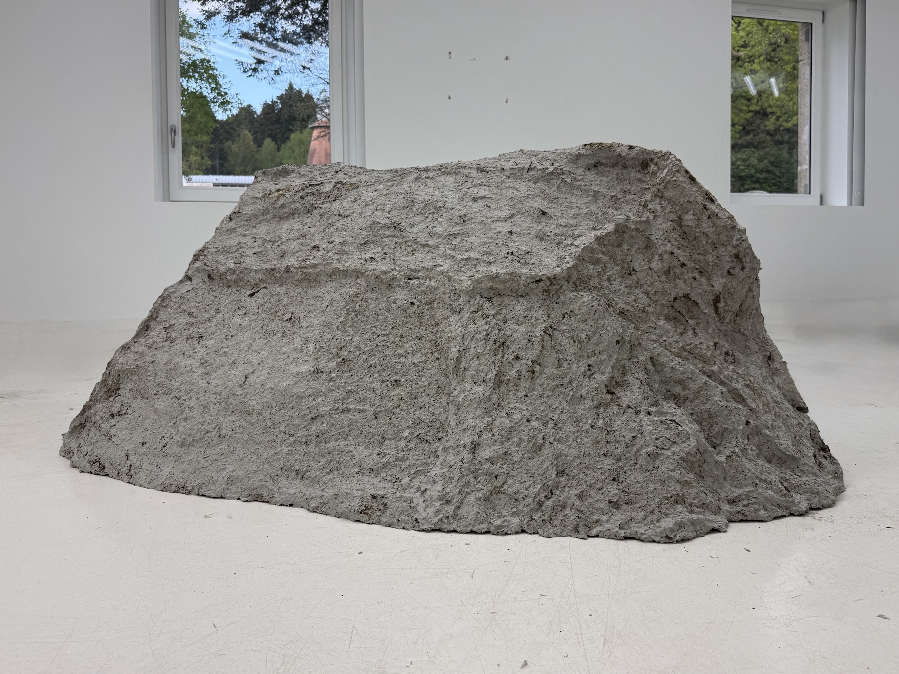
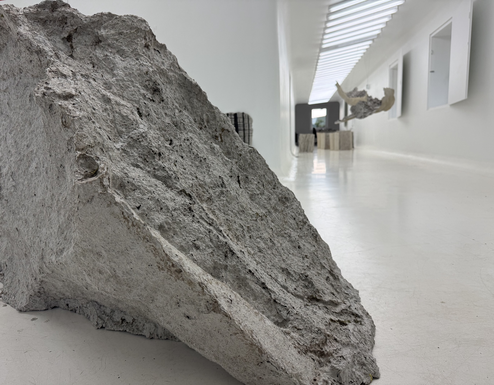

Roche
Suivant cette même démarche, j’ai réalisé l’empreinte d’une roche d’environ deux mètres de diamètre. Face à la complexité de sa surface et à la profondeur de ses anfractuosités, j’ai procédé par fragments avant de les réassembler. Cette roche étant à l'origine partiellement ancrée dans le sol, l’œuvre finale prend la forme d’une « roche en papier » dont la base tronquée témoigne de son incomplétude primitive. Cette configuration donne ainsi l'illusion que la roche est délicatement posée à la surface de l'eau.








